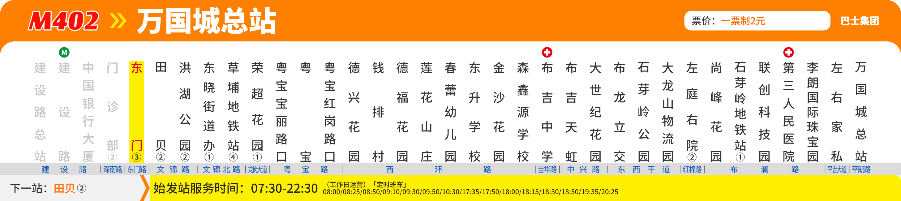

RenderWeave
模块与动作
Ctrl K
模板
▾
admin@dev.test · 客户管理员
模板
/
标准线路单边
/
站点
停靠站点 v1 · 8–800 × 80–110 mm
已暂存，未保存 · 1 处未发布
保存
发布修订

样例
问题 0
改动 1
DSL
M402 开往万国城 · 本站序号 5
▾
站名字号 10 mm · 画板 740 × 165 mm
没有问题：这张图与正式出图相同
草稿 100 DPI
原型，只作讨论 · 场景
Ctrl+/ 快捷操作 · 图和框是引擎的真实输出，写回是模拟